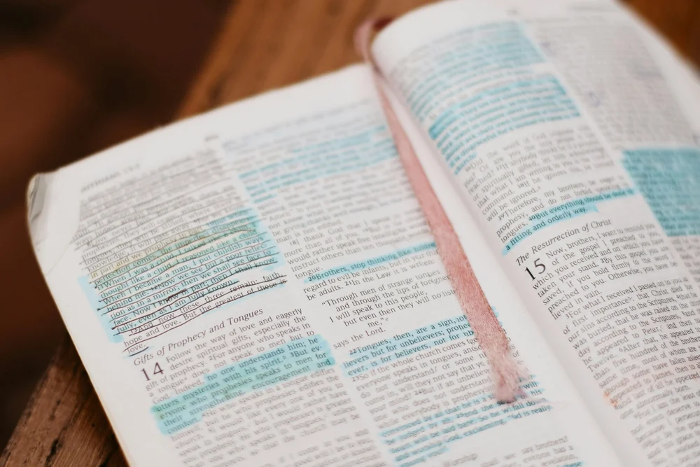
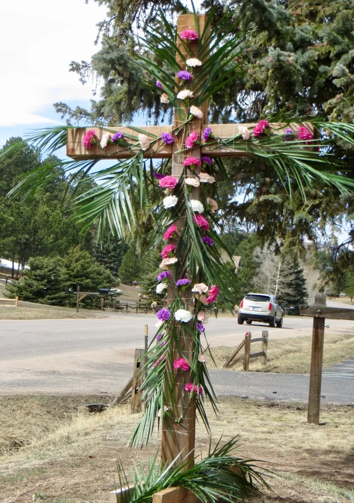
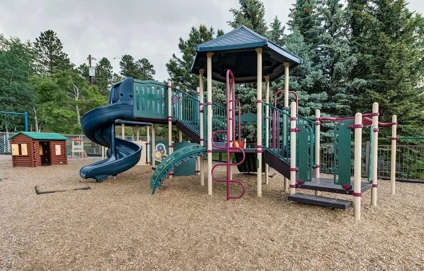

Lenten Reflections
Devotional reflections, a recap of our midweek prayer service, and volunteer opportunities for Holy Week. Plus: youth group updates and new Bible study times.

Palm Sunday is almost here, and the Easter season is bringing new life to our community. Whether you're a longtime member or visiting for the first time, there is a place for you in every service this Holy Week.
"Holy Week is the heartbeat of our faith. From the triumphal entry to the empty tomb, we are invited to walk alongside Jesus through the full story of redemption. I hope you'll join us for as many services as you can this week. Bring a neighbor, bring a friend — bring anyone who needs to hear that they are loved."
Our annual Easter egg hunt returns after the Easter Sunday service! Kids of all ages are welcome on the front lawn. We need volunteers to help hide eggs and supervise stations — please sign up at the welcome table or email office@churchotc.com.
Blessings,
The Church of the Cross Staff
Browse our archive of previous Weekly Happenings newsletters.

Devotional reflections, a recap of our midweek prayer service, and volunteer opportunities for Holy Week. Plus: youth group updates and new Bible study times.

Over 40 volunteers turned out for our Community Service Day! See photos, hear testimonials, and learn about our next outreach event coming up this spring.

Hear about our new Wednesday evening prayer gatherings, the 40-day prayer journal, and an update on our prayer chain ministry as we enter the Lenten season.
Our youth group returned from a transformative winter retreat in the mountains. Read their stories and learn how to support the next retreat in the fall.
Reflecting on the greatest commandment: to love one another. Photos from our Valentine's fellowship dinner and how to get involved in our care ministry.